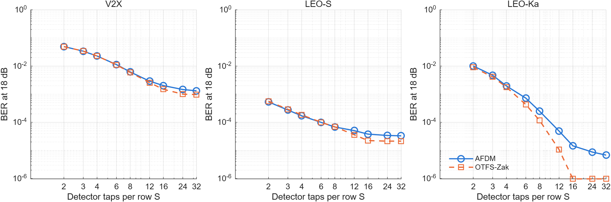
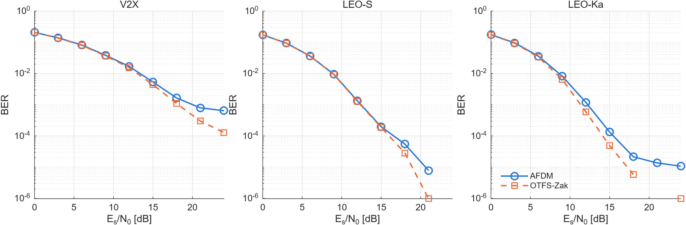
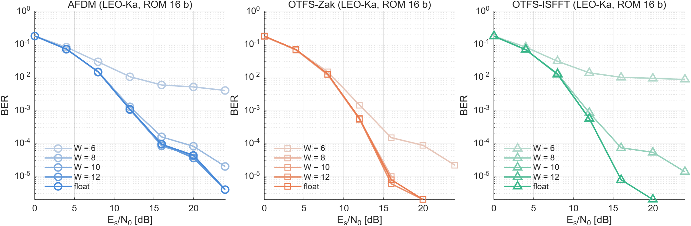

Both waveforms share everything except the transform pair. The modulator, demodulator and MP detector are the blocks that go to the FPGA; the channel is modelled only in MATLAB.
Figure 1. The only difference between the waveforms is the transform pair inside the modulator and demodulator. The dashed path is a modelling shortcut: the detector is handed the true effective channel Demod · H · Mod, cut to its S strongest taps per row, instead of an estimate. Channel regimes: V2X at 5.9 GHz, LEO-S at 2 GHz and LEO-Ka at 20 GHz (3GPP NTN-TDL-C, 600 km orbit).
Figure 2. The modulators drawn to scale: box width is the number of complex-multiply slots (including trivial twiddles). With rectangular pulses, ISFFT + Heisenberg is mathematically identical to the single-pass Zak form, which needs a third of the multiplies of AFDM. AFDM's two chirp passes cost as much as two extra FFT stages. The demodulators mirror these paths.
Figure 3. Verification flow. The six transform blocks match MATLAB bit for bit; the fixed-point MP detector is within 3% of the floating-point BER with 99.7–100% identical decisions. Everything to the right of the dashed arrow needs the AMD tools installed.Novelty
What could make it publishable
The paper stands on the combination below, not on any one item. Items marked "needs FPGA results" are the core contribution and cannot be claimed until synthesis runs.
First receiver-inclusive, same-target synthesis of AFDM and OTFS
Transforms and the MP detector for both waveforms on one Zynq-7020, same tools, same clock. Gap: Hassan et al. (J. Signal Process. Syst. 2026) put both modulators on a CGRA but no receiver, no BER link, no channel regimes.
Needs FPGA results
First hardware test of AFDM's "marginal cost" claim
arXiv:2602.08163 puts AFDM's overhead over OFDM at 12/(5 log₂N) FLOPs; arXiv:2605.23062 calls it a "firmware patch" and cites no measurement. The only experiment behind them is a USRP demo that runs all baseband processing on a PC. Gap: no FPGA measurement exists.
Needs FPGA results
AFDM needs a wider detector under fractional Doppler
AFDM's Doppler leakage spreads along the full 256-sample row; OTFS's stays within 16 Doppler bins. At S = 16 taps OTFS keeps 99.8% of the channel energy against AFDM's 98.9%, and AFDM levels off at a higher BER. Gap: leakage is known qualitatively (Rou et al. 2024, Fig. 3); its cost in detector width has not been quantified.
Evidence in hand
The cost ranking flips with the OTFS pulse assumption
Published cost comparisons assume pulse-shaped OTFS (AFDM cheaper); published BER comparisons, including the NTN paper, assume rectangular pulses, where OTFS collapses to the Zak form and needs a third of AFDM's multiplies (Figure 2). Gap: no one has measured both on the same platform under the same assumption.
Analysis done · HW to confirm
Word-length requirement per waveform
No BER loss at 10-bit data for AFDM and OTFS-ISFFT, 8 bits for OTFS-Zak; at 6 bits AFDM and ISFFT hit error floors. Gap: no fixed-point comparison of the two waveforms has been published; the Bluestein-AFDM group lists it as future work.
Evidence in hand
Cost of reconfiguring AFDM chirps across regimes
c₁ depends on the maximum Doppler (2N·c₁ = 5 for V2X and LEO-S, 7 for LEO-Ka), so a fixed chirp ROM serves one regime only. The price of a loadable ROM or a run-time chirp generator is exactly what "firmware patch" leaves out.
Needs FPGA results
Doppler rate, quantified per regime
Within one frame it adds at most 2 × 10⁻³ rad of phase and can be ignored; it matters only across frames, through drift of the Doppler pre-compensation (up to 116 Hz per 20 ms at Ka-band zenith). A supporting result that answers a question both reference papers leave open, not a headline.
Supporting
Open, bit-true MATLAB-to-HLS framework
One quantizer definition shared by MATLAB and ap_fixed, with exported vectors, so every hardware number traces back to a BER curve. Strengthens reproducibility; reviewers value it but it is not novelty by itself.
Supporting
Claim to avoid"First hardware implementation of AFDM and OTFS" is false: Hassan et al. already implemented both modulators on one CGRA. Always say "receiver-inclusive" and "same-target".
MATLAB results
Are the results good?
Sound and internally consistent, but not yet publication grade. Every model passes its self-checks, the hardware code matches MATLAB bit for bit, and one finding (AFDM's detector-width penalty) is genuinely interesting. What is missing is realism in a few inputs and more statistical depth at high SNR; the fixes are listed below.
Metric
AFDM
OTFS-Zak
OTFS-ISFFT
SQNR at 12-bit data, Tx / Rx
50.0 / 49.9 dB
59.6 / 53.6 dB
49.5 / 48.8 dB
Smallest data width with no BER loss
10 bits
8 bits
10 bits
Complex-multiply slots per modulator frame
1,536
512
1,536
BER at 18 dB, LEO-Ka, S = 16
1.5 × 10⁻⁵
9.8 × 10⁻⁷ (1 error)
= Zak (same maths)
Channel energy kept by S = 16 taps, LEO-Ka
98.9 %
99.8 %
= Zak
BER at 24 dB, V2X, S = 16 (placeholder profile)
6.4 × 10⁻⁴
1.3 × 10⁻⁴
= Zak
Mean MP iterations at 18 dB, V2X / LEO-S / LEO-Ka
6.2 / 1.4 / 2.7
5.4 / 1.3 / 2.4
= Zak

Figure 4. The key evidence: BER against the MP detector's width S (its hardware cost). The curves match up to S ≈ 8, then AFDM levels off. Same 2,000 frames for every point.

Figure 5. BER vs SNR with S = 16. The waveforms are indistinguishable at low SNR; the gap opens where the dropped taps start to dominate the noise.

Figure 6. End-to-end BER with fixed-point transforms (LEO-Ka, 16-bit ROMs). Darker is wider; the 8–12-bit curves sit on the floating-point curve except where noted in the table.
Regime
Carrier
Max per-path Doppler
α max
2N·c₁
Doppler-rate phase in one frame
V2X
5.9 GHz
2,733 Hz
1
5
2.1 × 10⁻³ rad
LEO-S
2 GHz
927 Hz + 6 Hz drift
1
5
1.6 × 10⁻⁵ rad
LEO-Ka
20 GHz
9,266 Hz + 57 Hz drift
2
7
1.6 × 10⁻⁴ rad
What is solid
Models verified: unitary transforms, Zak ≡ ISFFT form, AFDM tap positions match theory, prefix formula checked, channel matrix equals the sample-wise channel.
Hardware code is exact: 0 mismatches over 30,720 samples per configuration; a mismatched build fails as it should.
Quantization behaves as theory says: about 6 dB of SQNR per bit, no saturation with 3 integer bits.
Doppler numbers match 3GPP ranges: 45.4 kHz at S-band and 454 kHz at Ka-band for a 10° pass (3GPP quotes ±48 / ±480 kHz).
Fair comparisons: every configuration sees the same random channels and noise, so differences are paired, not luck.
What a reviewer will attack
V2X profile is a placeholder.Replace with a published model (Acosta-Marum, or 3GPP TR 37.885).
High-SNR points rest on 1–15 errors.Run 10,000+ frames at 18–24 dB and report confidence intervals.
Perfect CSI and integer delays.Add pilot-based estimation, or at least the fractional-delay channel; arXiv:2602.08163 shows integer-delay models can hide an error floor.
Is the AFDM penalty our truncation rule?Compare with AFDM's own banded tap selection (P · (2ξ + 1) taps), sweep ξ, and add an MMSE/LDL baseline.
Low diversity at this numerology.V2X Doppler is only 0.36 of a bin; sweep N and bandwidth so the regimes separate more.
Assumed LEO delay spread and update interval; QPSK only, uncoded.Take values from TR 38.811 and sweep them; add 16-QAM.